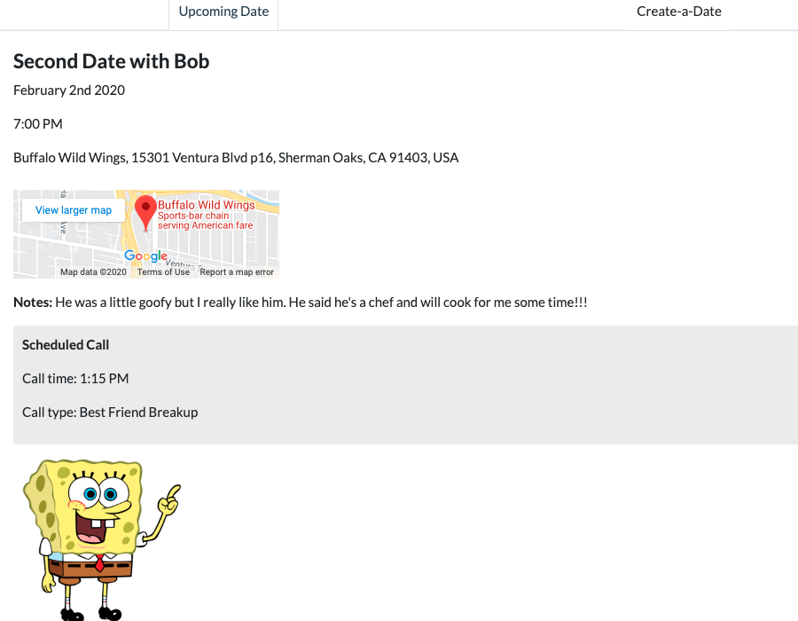

My name is Marti. I'm a full-stack web developer, amateur artist and trilingual polyglot, and I want to work with you.
I'm passionate about clever, succinct code and building out projects from start to finish -
from intuitive user interfaces to RESTful APIs and database management, I do it
all.
Still not convinced? Check out my projects below!
Projects

Date Rescue
ReactMySQL
Dating safety app made to help people feel secure when meeting potential new flames off of dating
apps. Users can generate a public “date page” that contains information about their upcoming meeting
to share with friends, or schedule a “rescue call” from the app, which will dial them at a time of
their choice (providing them a convenient escape in case their date turns sour).
WordLove is a vocabulary-learning app that allows users to search for words and phrases in other
languages (currently supports Spanish, German, Japanese, and Chinese) and save the results of their
choice to customizable vocabulary lists. The saved vocabulary can be assigned a difficulty,
user-created definitions, and notes to assist the user in memorizing the words based on their
learning needs and style.
The Library is a simple library app made with Django and SQLite. Users can input information about
their books, including title, author, synopsis, image, and their own personal reviews and thoughts.
They can then search their collection by the book's title, author, or review, or browse all of their
books in the order of their choosing.
Looking for the perfect cocktail and music combination? Sit back, relax, and open this app! Users
can search for drinks by name or based on the ingredients they have at home, and the app will
suggest a song to accompany their beverage. Already have some music queued up? Let Musiholic know
what you’re listening to and it will recommend a drink to match your genre of choice.